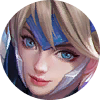

Ringkasan
Perubahan
19 item berubah dari 7 screenshot: 13 ↑ buff, 5 ↓ nerf, 1 -
Status di data
25 diterapkan server · tercatat, 1 sudah di file game, 6 teks
"diterapkan server" = angka baru belum ada di file game (dikirim server). "tercatat" = sudah ada di server_patch.json.
Penyesuaian Commander
| Item | Arah | Perubahan | Angka | Status |
|---|---|---|---|---|
| Kagura | ↑ buff | Shield pada Bintang 2 | 125% → 135% (+8%) | diterapkan server · tercatat di server_patch.json |
| Ling | ↑ buff | Peningkatan Hybrid ATK Permanen saat Memenangkan Duel | 6% → 8% (+33%) | diterapkan server · tercatat di server_patch.json |
 Kalea Kalea | ↓ nerf | Mengurangi hadiah bonus Brankas Harta untuk 5-8 poin sebanyak 1-2 Gold | teks | |
| Guinevere | - | Peluang Mendapatkan Hero Gratis saat Refresh Toko pada Bintang 2 | 24% → 23% (-4%) | diterapkan server · tercatat di server_patch.json |
Penyesuaian Sinergi
| Item | Arah | Perubahan | Angka | Status |
|---|---|---|---|---|
 Dawnbringer Dawnbringer | ↑ buff | 4/6 | teks | |
| Dawnbringer | ↑ buff | Dawnbringer: Equipment Dawnbringer yang baru didapatkan mendapatkan | 7/14 → 9/15 (+7%) | diterapkan server · tercatat di server_patch.json |
 Swiftblade Swiftblade | ↑ buff | 2/4/6 | teks | |
| Swiftblade | ↑ buff | Swiftblade: Hero Swiftblade mendapatkan | 25/50/100 → 35/65/130 (+30%) | diterapkan server · tercatat di server_patch.json |
| Titan | ↓ nerf | Batas HP untuk Eksekusi (Atribut Balmond) | 18% → 15% (-17%) | sudah di file game |
| Titan | ↓ nerf | Batas HP untuk Eksekusi (Atribut Balmond): 18% >> 15% DMG Area setelah Eksekusi (Atribut Balmond) | 200% → 180% (-10%) | diterapkan server · tercatat di server_patch.json |
Penyesuaian Hero
| Item | Arah | Perubahan | Angka | Status |
|---|---|---|---|---|
| Melissa | ↑ buff | Pengali DMG Area pada Bintang 3 | 205% → 320% (+56%) | diterapkan server · tercatat di server_patch.json |
| Melissa | ↑ buff | Bonus ATK speed pada Bintang 3 | 100% → 200% (+100%) | diterapkan server · tercatat di server_patch.json |
 Eudora Eudora | ↑ buff | Pengali DMG pada Bintang 3 | 700% → 800% (+14%) | diterapkan server · tercatat di server_patch.json |
| Eudora | ↑ buff | Pengali DMG Tertunda pada Bintang 3 | 345% → 400% (+16%) | diterapkan server · tercatat di server_patch.json |
 Kimmy | ↑ buff | Pengali DMG Fase Pertama pada Bintang 3 | 1.925% → 2.150% (+12%) | diterapkan server · tercatat di server_patch.json |
| Kimmy | ↑ buff | Pengali DMG Fase Kedua pada Bintang 3 | 825% → 925% (+12%) | diterapkan server · tercatat di server_patch.json |
 Argus Argus | ↑ buff | Pengali DMG Basic ATK yang Diperkuat pada Bintang 3 | 600% → 700% (+17%) | diterapkan server · tercatat di server_patch.json |
 Lolita Lolita | ↑ buff | Pengali Physical DMG pada Bintang 3 | 1.700% → 1.950% (+15%) | diterapkan server · tercatat di server_patch.json |
| Lolita | ↑ buff | Pengali DMG Berbasis HP pada Bintang 3 | 12% → 15% (+25%) | diterapkan server (file game: 18115) · tercatat di server_patch.json |
| Yu Zhong | ↑ buff | Pengali DMG untuk Dua Fase Pertama pada Bintang 3 | 900% → 1.050% (+17%) | diterapkan server · tercatat di server_patch.json |
| Yu Zhong | ↑ buff | Pengali DMG untuk Fase Ketiga pada Bintang 3 | 1.120% → 1.300% (+16%) | diterapkan server · tercatat di server_patch.json |
 Sora Sora | ↑ buff | Pengali DMG pada Bintang 3 | 1.000% → 1.200% (+20%) | diterapkan server · tercatat di server_patch.json |
 Karina Karina | ↑ buff | Penqa'i DMG Ski" pada Bintang Pengali DMG Skill pada Bintang 2/3: >> | teks | |
 Erza Erza | ↑ buff | Shield pada Bintang 2/3 | 750/1.800 → 1.050/2.400 (+33%) | diterapkan server · tercatat di server_patch.json |
| Erza | ↑ buff | Bonus Physical ATK pada Bintang 2/3: >> | teks | |
 Balmond Balmond | ↓ nerf | Perolehan Shield untuk Setiap Target yang Terkena pada Bintang 3 | 9% → 7% (-22%) | diterapkan server · tercatat di server_patch.json |
| Balmond | ↓ nerf | Batas Mana pada Bintang 3 | 120 → 170 (+42%) | diterapkan server · tercatat di server_patch.json |
| Popol | ↓ nerf | Jum!ah Lemparan Tombak pada Bintanq 112 | 27 → 18 (-33%) | diterapkan server · tercatat di server_patch.json |
| Popol | ↓ nerf | Jumlah Lemparan Tombak pada Bintang 1/2 | 27 → 18 (-33%) | diterapkan server · tercatat di server_patch.json |
| Popol | ↓ nerf | Pengali DMG per Serangan pada Bintang 1/2: 30%/ | 35% → 50% (+43%) | diterapkan server · tercatat di server_patch.json |
| Popol | ↓ nerf | Pengali DMG saat Durasi Freeze Berakhir pada Bintang 1/2: 30%/ | 35% → 50% (+43%) | diterapkan server · tercatat di server_patch.json |
 Bane Bane | ↓ nerf | Durasi Freeze pada Bintang 2: 1,8 detik >> 1,2 detik | teks |
Dampak ke sinergi
 Bruiser Yu Zhong ↑ buff
Bruiser Yu Zhong ↑ buff Chrono Wanderer Bane ↓ nerf
Chrono Wanderer Bane ↓ nerf- Dauntless Lolita ↑ buff, Balmond ↓ nerf
- Dawnbringer sinergi ↑ buff, Eudora ↑ buff, Yu Zhong ↑ buff, Karina ↑ buff
 Deadeye Melissa ↑ buff, Kimmy ↑ buff
Deadeye Melissa ↑ buff, Kimmy ↑ buff Defender Bane ↓ nerf
Defender Bane ↓ nerf Dragonslayer Kimmy ↑ buff
Dragonslayer Kimmy ↑ buff Echomancer Sora ↑ buff
Echomancer Sora ↑ buff FAIRY TAIL Erza ↑ buff
FAIRY TAIL Erza ↑ buff- Frostrider Popol ↓ nerf
- Phasewarper Popol ↓ nerf
- Scavenger Sora ↑ buff
- Shadeweaver Melissa ↑ buff
 Starbelle Lolita ↑ buff
Starbelle Lolita ↑ buff Stargazer Eudora ↑ buff
Stargazer Eudora ↑ buff- Swiftblade sinergi ↑ buff, Karina ↑ buff
- Titan sinergi ↓ nerf, Argus ↑ buff, Balmond ↓ nerf
 Weapons Master Argus ↑ buff, Erza ↑ buff
Weapons Master Argus ↑ buff, Erza ↑ buff
Screenshot